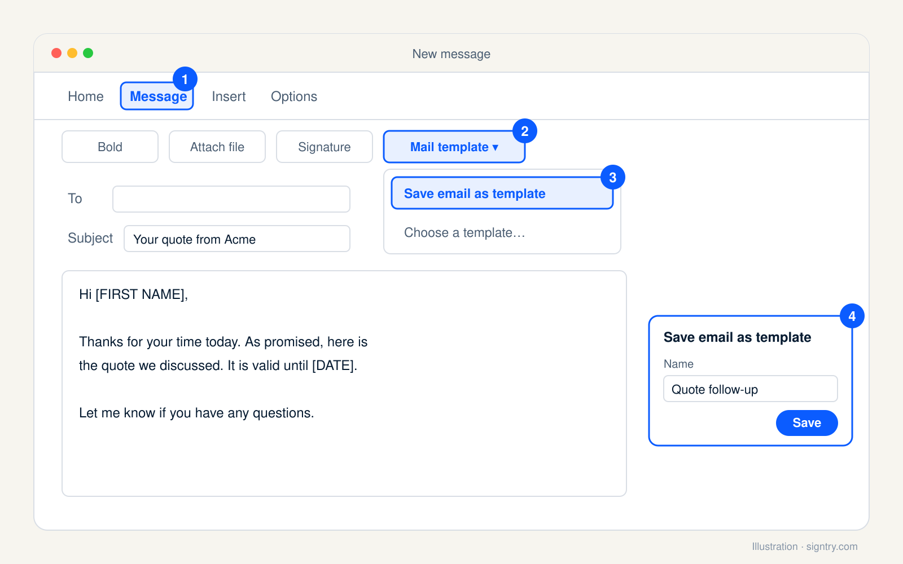
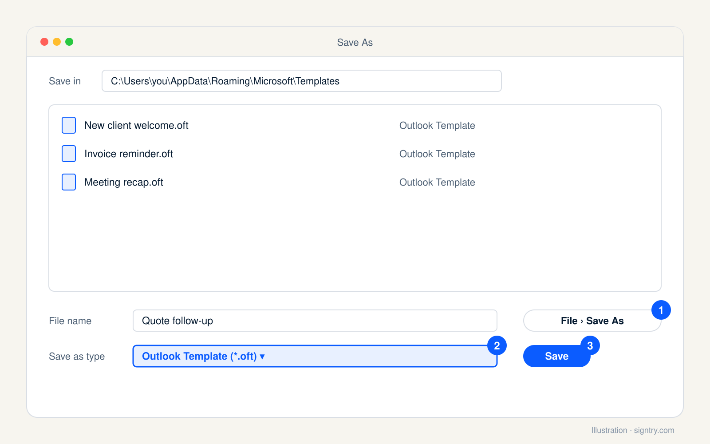
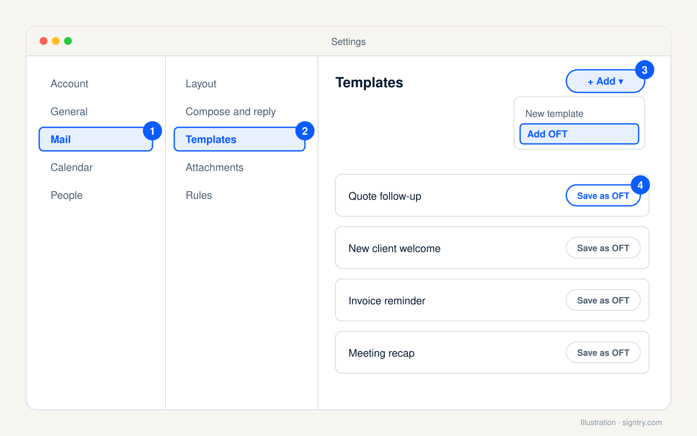
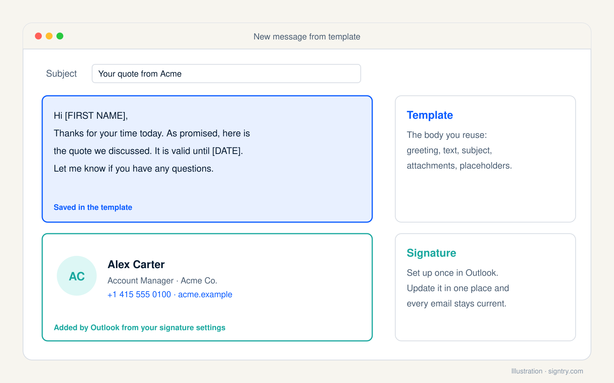

Quick answer: In new Outlook and Outlook on the web, open a new message, then select Mail template → Save email as template on the Message ribbon. In classic Outlook for Windows, select File → Save As and choose Outlook Template (*.oft). On a Mac, use File → Save As Template.
Outlook now has two different template features, four versions of the app, and menus that moved in the last year. Plenty of guides still describe buttons that no longer exist, so start by checking which Outlook is in front of you.
Which Outlook do you have?
| If you see… | You are using | Jump to |
|---|---|---|
| No File tab, and a ribbon that looks like the web version | New Outlook for Windows | Steps |
| Outlook in a browser at outlook.office.com or outlook.live.com | Outlook on the web | Steps |
| A File tab at the far left of the ribbon | Classic Outlook for Windows | Steps |
| An Outlook menu in the Mac menu bar | Outlook for Mac | Steps |
Mail templates vs My Templates: pick the right one
New Outlook and Outlook on the web give you two options. Microsoft separates them clearly; most guides don't.
| Mail templates | My Templates add-in | |
|---|---|---|
| What it saves | The whole email: recipients, subject, body and attachments | Short text snippets only |
| Formatting | Rich formatting, images and tables | Plain text with basic styling |
| Best for | Complete emails you send the same way every time | Reusable phrases you drop into replies |
The rule of thumb: if you normally copy an old email and change two words, you want a Mail template. If you keep typing the same paragraph about your refund policy, you want My Templates. Both need a qualifying Microsoft 365 subscription, so on a free Outlook.com account some of these options may not appear.
How to create an email template in new Outlook and Outlook on the web
Save a full email as a Mail template
- On the Home ribbon, select New → Mail.
- Write the email exactly as you want to reuse it. Add the subject, any attachments, and recipients only if they never change.
- On the Message ribbon, select Mail template → Save email as template.
- Type a name for the template and select Save.

To see everything you have saved, open Settings → Mail → Templates. Templates are listed by account, and a template you save in new Outlook also shows up in Outlook on the web for the same mailbox.
Watch the recipients. Mail templates save whatever is in To, Cc and Bcc. Save a template while a colleague is still in Cc and every email you send from it copies them too. Clear the recipient fields before saving unless they truly never change.
Save a text snippet with My Templates
- Select New → Mail.
- On the Message tab, select My Templates. A side panel opens.
- Select +Template.
- Enter a title, then type the snippet text in the field below it.
- Select Save. To insert it later, open the same panel while writing and click the snippet.
Don't see My Templates at all? Your organization has probably switched add-ins off. That is an admin setting, so ask IT. Mail templates still work without it.
Use a template you have saved
- On the Home ribbon, select New → Mail from template.
- Pick the template from the list. It opens as a normal draft.
- Change the recipients, subject or body as needed, then select Send.
How to create an email template in classic Outlook for Windows
Classic Outlook saves templates as .oft files on your computer rather than in your mailbox.
- On the Home tab, select New Email (shortcut: Ctrl + Shift + M).
- Write the message you want to reuse.
- In the message window, select File → Save As.
- In the Save as type list, choose Outlook Template (*.oft).
- Name the file and select Save.

Outlook saves it to C:\ by default. Remember that path: you will need it if you move to new Outlook or a new computer.
Open a template in classic Outlook
- Select New Items → More Items → Choose Form.
- In the Look In list, select User Templates in File System.
- Pick your template and select Open.
Four clicks deep, every single time. If you send the same email several times a day, pin the Templates folder in File Explorer and double-click the .oft file instead. It opens the same draft.
How to create an email template in Outlook for Mac
- Open the email you want to reuse, or write a new one.
- Select File → Save As Template.
- Give it a name, such as “Monthly status update”, and add a tag if you like.
- Choose where to save it and select Save.
To use it, select File → New → Mail From Template and pick the file. Mac templates end in .emltpl, not .oft, so the two are not interchangeable. Microsoft says the built-in Mac controls need a Microsoft 365 subscription and Outlook for Mac 15.35 or later, and the My Templates add-in on Mac only works with Exchange accounts.
How to edit an Outlook email template
This trips up nearly everyone: changing a draft you opened from a template does not change the template. If you select Save, Outlook creates a draft of that message and leaves the template untouched.
- New Outlook and the web: open the template, make your changes, and save it again with Mail template → Save email as template under the same name. Then delete the old version in Settings → Mail → Templates.
- Classic Outlook: open the
.oft, edit it, then File → Save As → Outlook Template with the same file name to overwrite it. - My Templates: open the panel and select Edit on the snippet.
How to move classic templates to new Outlook
Switching from classic to new Outlook does not bring your .oft files along. Import them yourself:
- In new Outlook, open Settings → Mail → Templates.
- Select Add → Add OFT.
- Select Choose and browse to
C:\.Users\ <your username>\ AppData\ Roaming\ Microsoft\ Templates - Select the files (you can pick several at once) and select Add.

It works in reverse too: Save as OFT next to any saved template downloads a copy to your computer.
How to share Outlook email templates with your team
Outlook has no shared template library for regular mailboxes. You have two practical options:
- Forward as OFT. In new Outlook, open the draft and select Forward as OFT on the Message tab. Outlook attaches the template to a new email, and your colleague imports it with Add → Add OFT.
- Use a shared mailbox. My Templates snippets created in a shared mailbox can be visible to everyone with access, but only if the mailbox is added as a full account in new Outlook, or opened in a separate tab with Open another mailbox in Outlook on the web. Open it any other way and the templates stay private to you.
Either way, shared files drift: six people, six slightly different versions of the “pricing follow-up” within a month. If the wording matters, keep one master copy and re-share it whenever it changes. The same goes for signatures, which is why teams use team email signatures from one CSV instead of asking everyone to copy a file.
Keep your email signature out of the template
A template is the body of the email. Your signature should stay separate.

Paste your signature into a template and two things happen. If Outlook adds your signature automatically, you can end up with your sign-off twice. And every template freezes your signature as it was on the day you saved it: change your job title, phone number or logo, and you are editing every template one by one.
Set up your signature once in Outlook and let Outlook attach it. Our guide on how to make an email signature in Outlook covers every version, including adding a logo that does not turn into an attachment. If you would rather skip the signature editor, the free email signature generator builds an HTML signature you can paste straight in.
Common mistakes to avoid
- Leaving placeholders in. Write them in capitals and brackets, like
[FIRST NAME]or[DATE]. They are ugly on purpose, so you can't miss them before you hit Send. - Using My Templates for a formatted email. It stores plain text with basic styling. Tables and images belong in a Mail template.
- Saving outdated attachments. A Mail template keeps the file from the day you saved it. Update the template when the price list changes, or attach the file fresh each time.
- Vague names. “Template 3” means nothing in six weeks. Name templates by situation: “Quote follow-up, day 7” or “New client welcome”.